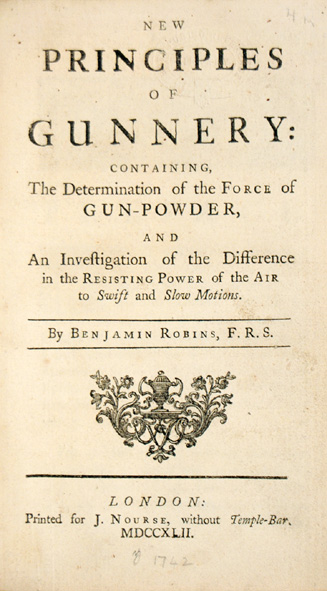
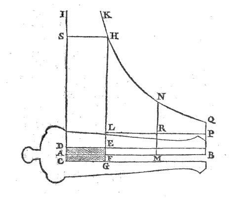
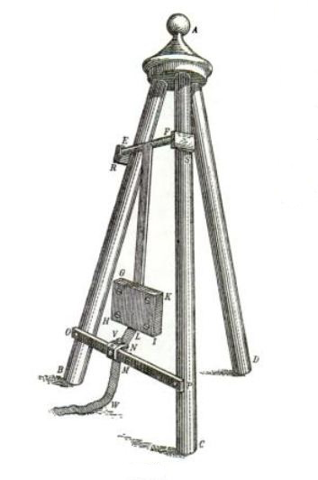

Benjamin Robins on Ballistics
Benjamin Robins (1707 - 1751)
In the recent book "Civilization: The West and the Rest", historian Niall Ferguson attempted to identify the major factors that generated the rapid development of Western society over the last 500 years. He nominated the general acceptance of the scientific method as being one factor in providing, among other things, technological and military supremacy. As an example he cited the work of Benjamin Robins and his contribution to the physics of guns. This work significantly improved accuracy and effectiveness of the artillery of Western armies.
Robins' work on ballistics was published in 1742, as a short book entitled "The New Principles Of Gunnery". A later edition, published in 1805 includes "several other tracts on the improvement of practical gunnery" that Robins presented at the Royal Society.
"The New Principles Of Gunnery" has only 2 Chapters, in these Robins sets out a series of propositions which form a model of the physics of guns. He then reports the results of testing the model's predictions against experiment. A beautiful example of the scientific method.
The 18th century style of scientific writing was rather wordy and the mathematics was presented in a descriptive manner rather by using equations. To assist the modern reader in appreciating Robins' work, here is a brief summary of the book with the physics and mathematics of each proposition set out in a modern format.
"New Principles in Gunnery"
Chapter I
Of the Force of Gunpowder
In this chapter, Robins puts forward thirteen propositions to model the behaviour of smooth bore, black powder guns firing Lead or Iron balls. The propositions are:
- Prop I. Gunpowder, fired either in a Vacuum or in Air, produces by its Explosion a permanent elastic Fluid.
Robins proposes that the explosion of gunpowder converts the powder to a gas, an "elastic fluid". His experiments to verify the proposition consisted of igniting gunpowder in a sealed container with a manometer attached to measure the gas pressure. He notes that the volume of gas produced is proportional to the quantity of powder exploded and that the gas produced is permanent, not diminishing in volume over time.
- Prop II. To explain more particularly the Circumstances attending the Explosion of Gunpowder, either in a Vacuum or in Air, when fired in the Manner described in the experiments of the last Proposition.
The proposition is that the pressure in the vessel containing the exploding gunpowder is caused by two effects, the large volume of gas produced and secondly, that the gas is initially a hot flame and so is of higher pressure. The gas quickly cools and the pressure decreases, but only back to the pressure caused by the volume of the permanent gas.
- Prop III. The Elasticity or Pressure of the Fluid produced by the firing of Gunpowder, is ceteris paribus [all else being the same] directly as its Density.
The proposition states that the volume of gas produces is proportional to the quantity of gunpowder exploded. Robins explodes some larger quantities and observes the resulting gas pressure is proportional to the gunpowder consumed.
- Prop IV. To determine the Elasticity and Quantity of this elastic Fluid, produced from the Explosion of a given Quantity of Gunpowder.
Robins determines by experiment that 1 oz of gunpowder produces 460 cubic inches of gas (at room temperature and pressure). Robins states that the gas may be air, at least it appears to have the same density as air. From the known density of air, 460 cubic inches represents about \(\frac{1}{3}\) of the mass of gunpowder being converted to gas. He then measures the density of gunpowder and concludes that 1 cubic inch of gunpowder will produce 244 cubic inches of gas. Similarly, if the volume of the gas is restricted to the same volume as the gunpowder, the gas pressure will rise by a factor of 244.
- Prop V. To determine how much the Elasticity of the Air is augmented, when heated to the extremist Heat of red-hot Iron.
Robins experimentally determines the increase in the volume of air when heated from room temperature to the temperature of red hot iron. To do this Robins heats a very rigid hollow cylinder to red heat, stoppers the end with a tapered metal bung, and so has a known volume of hot gas. He then immerses the bunged end in water, when the cylinder has cooled, the bung is removed and water rushes in to equalise the now low pressure inside the tube. The bung is replaced. The volume of water in the tube is measured and the difference between the volume of the tube and the volume of the water is a measurement of the room temperature volume of air that filled the tube when red hot.
The experiments showed that the average expansion ratio was \(4\frac{1}{11}\) to 1 for air heated from ambient to red heat.
- Prop VI. To determine how much that Elasticity of the Fluid produced by the firing of Gunpowder, which we have above assigned, is augmented by the Heat it has at the Time of its Explosion.
Robins assumes that the heat of exploding gunpowder is at least that of red hot iron. Therefore the pressure of the gas produced, which was shown to be 244 times atmospheric pressure, is further increased by a factor of \(4\frac{1}{11}\). The resulting pressure is therefore approximately 1000 atmospheres, assuming it is confined to the same volume as the original gunpowder charge occupied.
- Prop VII. Given the Dimensions of any Piece of Artillery, the Density of its Ball, and a Quantity of its Charge, to determine the Velocity which the Ball will acquire from the Explosion, supposing the Elasticity of the Powder at the first Instant of its firing to be given.
Based on the previous propositions, Robins works through an example of his theory of interior ballistics, resulting in the calculation of muzzle velocity.
He takes as the example, a gun with barrel length 45", a bore of ¾" and the length of the powder charge in the barrel of 2⅝" firing a lead ball. Robins models the interior ballistics of the gun as follows.
The volume of exploding gunpowder produces a gas occupying the same volume as the powder and so exerts a pressure 1000 × atmospheric pressure. The force on the ball is this pressure × the cross-sectional area of the barrel. As the ball is pushed down the barrel the pressure will drop as the volume behind the ball increases. Boyle's law states that the pressure of a gas is inversely proportional to the volume it occupies. The volume increases linearly with distance down the barrel, so the pressure will be inversely proportional to the distance the ball moves down the barrel. Robins draws the graph of the force shown in Fig 1.
Figure 1. Cannon interior ballistics.
The line HNQ represents the force on the ball due to the gas pressure, which falls as 1/x,
$$F(x) = \frac{k}{x} $$where k is a constant and x is the distance from the breech end of the barrel. The force on the ball immediately after the explosion, F0 is represented by the line FH, this is equal to the initial pressure, P0, acting on the cross-sectional area of the ball, A.
$$F_0 = P_0 \; A $$and
$$ P_0 = R \; P_{atm}, $$where R is the ratio of the initial gas pressure to atmospheric pressure, \( P_{atm}\), which Robins measured to be 1000 from Prop. VI. Hence
$$ \begin{eqnarray} F_0 & = & R P_{atm} A \\ & = & R P_{atm} \pi (\frac{ d}{2})^2 \end{eqnarray} $$k can be calculated from the initial force on the ball at its initial position, a distance c along the barrel. c is the length of powder charge in the barrel c = 2⅝"
Hence
$$ F_0 = k/c $$Noting that atmospheric pressure is equivalent to the weight of a column of water 34 ft high, and the density of water is 62.4 lb/ft2, and the diameter of the ball is ¾"
$$\begin{eqnarray} k & = & 1000 \times 34 \times 62.4 \times 32.2 \times \pi \left(\frac{0.75}{2 \times 12}\right)^2 \times \left(\frac{2.625}{12}\right) \\ & = & 45,800. \end{eqnarray} $$so when the ball has moved a distance x down the barrel, shown in the diagram as point M, the force on the ball, represented by length MN, will be
$$ F(x) = \frac{45,800}{x} \quad\mbox{ where x is in ft} $$To calculate the expected muzzle velocity of the ball, Robins quotes from Newton's "Principia" that the integral of the force as a function of distance moved by a body is proportional to the square of the velocity the body acquires i.e. equal to its increase in kinetic energy
$$ \tfrac{1}{2} m v^2 = \int F(x) dx $$where m is the mass of the Lead ball ¾" diameter = 0.09 lb
Noting that the integral of \(\frac{1}{x}\) is \(ln(x)\), the integral of the force on the ball as it travels from point F (x = c) to B (x = L), where c is the length of the charge (= 2⅝") and L the length of the barrel (= 45").
$$ \begin{eqnarray} v^2 & = & \frac{2k}{m} \int_{c}^{L} \frac{1}{x}dx \\ & = & \frac{2 \times 45,800}{0.09} \int_{2.6}^{45} \frac{1}{x}dx \\ & = & \frac{2 \times 45,800}{0.09} \times (ln(45) - ln(2.625)) \\ & = & 1,018,000 \times 2.84 \\ & = & 2,890,000 \\ \\ v & = & 1700 \quad ft/sec. \end{eqnarray} $$Robins uses some slightly different values for the parameters at various points in his calculation and reports a muzzle velocity of 1668 ft/sec.
Robins then goes on to state how this velocity would scale with the various factors in the calculation, length of barrel, different bore etc. His points may be summarised by the following expression for muzzle velocity:
$$ v \propto \sqrt{\frac{c}{d} ln(\frac{L}{c})} \\ \\ \mbox{where:} \\ \mbox{c = distance to the back of the ball} \\ \mbox{d = bore diameter} \\ \mbox{L = full length of the barrel} \\ $$In the scholium to Prop. VII, a further example is given of the way the muzzle velocity scales, the velocity is inversely proportional to the square root of the mass of the ball. If the same gun is loaded with 2 balls (shot mass is doubled but all else the same), then the muzzle velocity would be change by a factor \( \frac{1}{\sqrt{2}} = 0.707\). If the single ball has muzzle velocity of 1700 ft/sec, then double shotted, the muzzle velocity will be approximately 1200 ft/sec.
[A more complete description of the equation for muzzle velocity implied by Robins' propositions is given in the Smooth Bore Cannon Ballistics page.]
- Prop VIII. To determine the Velocity, which any Ball moves with at any Distance from the Piece, it is discharged from.
To test the veracity of his gun dynamics Robins needed a method to accurately measure a gun's muzzle velocity. To do this he invented the ballistic pendulum. It did not require the then difficult measurement of very small time intervals but instead measured the velocity of a projectile by measuring its momentum and, knowing the mass of the projectile calculate the velocity.
Figure 2. Robins ballistic pendulum
The ballistic pendulum, shown in Fig 2, consisted of an arm suspended from a frame with a broad iron plate as its swinging mass. To the plate was screwed a thick sheet of wood into which the bullets were fired, wood was used so the bullet would be absorbed by the wood and not bounce back or shatter and the fragments bounce off.
Since the mass of the pendulum was much larger than the mass of the bullet, the initial velocity of the pendulum after impact was very much slower than the bullet, this allowed the height of the pendulum swing to be determined from the length of the arc through which it swung. This length was measured by attaching a ribbon to the lower part of the pendulum, the ribbon was lightly held by a pair of jaws mounted to the frame. A pin was inserted in the ribbon adjacent to the jaws, when the pendulum swung back, the extent of the swing was given by the length of ribbon from the jaws to the pin.
Robins shows how the velocity of the bullet can be calculated by working through an example.
A compound pendulum may be modelled as a simple pendulum with the same period, if the simple pendulum's length is equal to the distance from the pivot to the centre of oscillation Rco, given by
$$ R_{co} = \frac{I}{M R_{cm}} $$ $$\mbox{where: }\\ I \mbox{ is the moment of inertia of the compound pendulum,} \\ M \mbox{ is the mass of the compound pendulum,}\\ \mbox{and } R_{cm} \mbox{ is the distance from the pivot point to the centre of mass.} $$The moment of inertia of a compound pendulum is given by
$$I = \left(\frac{T^2}{4\pi^2} \right)MgR_{cm} $$ $$\mbox{where } T \mbox{ is the period of its swing. }$$Robins' ballistic pendulum had the following parameters
$$M = 56.19 \mbox{ lb} \\ R_{cm} = 52" \\ T = 2.53 \mbox{ sec}$$yielding
$$R_{co} = 62.65". $$The equivalent simple pendulum model will have the same moment of inertia if its mass, \(M_{co}\) is taken to be
$$M_{co} = \frac{R_{cm}}{R_{co}} M. $$The equivalent mass of the simple pendulum is therefore 46.63 lb.
Robins fired bullets at the centre of the wooden block, 66" from the pivot. He models the system for this point of impact as a simple pendulum 66" long and with the same moment of inertia as the compound pendulum, equivalent to a mass, M' at distance 66" from the pivot. M' is given by $$ M' = \frac{62.65}{66}\times 46.63 = 42.02 \mbox{ lb.} $$
The calculation of the bullet velocity is then a two step process. The conservation of momentum gives the following
$$ \begin{eqnarray} mv & = & (M' + m)V \\ v & = & \left(\frac{M' + m}{m}\right)V \end{eqnarray} $$ $$\mbox{where: }\\ m \mbox{ is the mass of the bullet,} \\ v \mbox{ is velocity of the bullet just before impact} \\ V \mbox{ is the velocity of the merged pendulum and bullet just after impact, at a distance 66" from the pivot.}$$The bullets used in this experiment had a mass \( m = \frac{1}{12} \mbox{ lb } (0.083\mbox{ lb}) \), substituting,
$$ \begin{eqnarray} v & = & \left(\frac{42.02 + 0.083}{0.083} \right) V \\ & = & 505 \times V \end{eqnarray} $$Robins then calculates V using the conservation of energy. The equivalent simple pendulum, with initial velocity V, will swing up to some maximum height, h, converting its kinetic energy into potential energy at the top of the swing.
$$ \frac{1}{2}(M' + m)V^2 = (M' + m)gh $$ $$\mbox{where } h \mbox{ is the maximum vertical height reached by the point of impact.}$$ $$ V = \sqrt{2gh} $$Substituting into the equation for the bullet's velocity
$$v = 505 \times \sqrt{2gh} $$The ribbon, attached at a distance of 71⅛" from the pivot gave a measurement of the arc length of 17¼", this scales to 16" as the length of the arc described by the point of impact, the corresponding vertical height, h may be calculated as
$$ h = 66 - 66cos\left(\frac{16}{66}\right) = 1.93" $$Hence the velocity of the bullet is
$$ v = 1625 \mbox{ ft/sec} $$Robins introduces some inaccuracy when rounding various parameters and he quotes a muzzle velocity value of 1641 ft/sec.
Corrected Muzzle Velocity
Robins' calculation of the initial velocity of the ballistic pendulum was in error. The error was only present in the worked example, the correct calculation was used for all the other muzzle velocities measurements in the book. The erratum was published in a paper Robins read to the Royal Society in 1743.
Robins calculation of the conservation of momentum was valid, as he modelled the equivalent simple pendulum to have the same moment of inertia as the compound pendulum, but the calculation of the velocity of the pendulum after impact was not valid. It is the height that the centre of oscillation rises that accurately represents the potential energy of a compound pendulum, rather than the height that the point of impact rises, as Robins used.
The corrected calculation is as follows:
The height, \(h_{co}\) that the centre of oscillation rises, where the energy is all potential, is given by
$$h_{co} = \left(\frac{62.65}{66} \right) h $$ $$\mbox{where } h \mbox{ is the height the point of impact reached.} $$The velocity that the centre of oscillation will reach at the bottom of the swung, where all energy would be kinetic, Vco will be
$$V_{co} = \sqrt{2g\frac{62.65}{66}h} $$and this means that the velocity of the point of impact will be
$$ \begin{eqnarray} V & = & \left(\frac{66}{62.65}\right) \sqrt{2g\frac{62.65}{66}h} \\ & = & \sqrt{\frac{66}{62.65}} \sqrt{2gh} \end{eqnarray} $$So the original equation for the bullet velocity
$$v = 505 \times \sqrt{2gh} $$becomes
$$ \begin{eqnarray} v & = & 505 \times \sqrt{\frac{66}{62.65}} \times \sqrt{2g 1.93} \mbox{ in/sec}\\ & = & 1625 \times \sqrt{\frac{66}{62.65}} \mbox{ ft/sec}\\ v & = & 1668 \mbox{ ft/sec.} \end{eqnarray} $$ - Prop IX. To compare the actual Velocities with which Bullets of different Kinds are discharged from their respective Pieces, with their Velocities computed from the Theory.
Robins now does a series of experiments firing bullets into his ballistic pendulum. He uses the original 45" barrel and a shorter, 12⅜" barrel and two different lengths of powder charge to test the theory. The resulting muzzle velocities are calculated using the method in Prop. VIII and the predicted values calculated in the manner described in Proposition VII.
The results are tabulated and the agreement between theory and experiment is remarkable good with an error of about ±2%.
Robins then builds a heavier ballistic pendulum of 97 lb and does more experiments adding a third, 7" barrel. With barrels from 7" to 45" and powder charges from 6 dw to 36 dw, the theory is again shown to predict the measured velocities to within about 2%.
A series of trials with very small charges, 1/12 those previously used, showed much lower velocities than the theory predicted. Muzzle velocities were approximately 400 ft/sec when the theory predicted 480. Robins postulates that the small powder charge does not reach the same high temperature as the larger charges and loses its heat more quickly as the gas expands down the barrel.
In the scholium, Robins discusses the significance of the theory of internal ballistics he has developed.
"The variety of these experiments and the accuracy with which they correspond to the theory, leave no room to doubt the certainty [that] the theory ... contains the true and genuine determination of the force and manner of acting of fired gunpowder. ... from this theory many deductions may be made of the greatest consequence to the practical part of gunnery. From hence the thickness of the piece, which will enable it to confine without bursting any charge of powder is easily determined, since the effort of the powder is known." - Prop X. To assign the Charges in the Force of Powder, which arise from the different State of the Atmosphere.
Robins tested the effect of the density of the atmosphere on the performance of guns. He tested the muzzle velocity in different seasons, in night and day and found no significant difference in the performance. He remarks that the quantity of moisture in the powder does affect performance, both with lower velocity and greater variability in velocity for the same charge.
- Prop XI. To investigate the Velocity which the Flame of Gunpowder acquires, by expanding itself, supposing it be fired in a given Piece of Artillery, without either a Bullet or any other Body before it.
Robins models the products of exploding gunpowder to be the 3/10ths converted to hot gas and the 7/10ths remaining as hot particulate matter, swept along with the gas down the barrel. He attempts to measure the speed of the gas emerging from the barrel when fired with no ball, using the ballistic pendulum. The velocity of the expelled gas is measured by fixing the barrel to the ballistic pendulum and measuring the speed of recoil. Assuming all the powder is burnt and ejected with a uniform velocity, then the average speed of the gas is approximately 7000 ft/sec.
From these data Robins is able to calculate the force of petards, small explosive devices held on the end of a pole, since "their action depends solely on the impulse of the flame". He concludes they are equivalent to a ball of twice the weight of the petard's charge travelling at 1400 to 1500 ft/sec.
- Prop XII. To ascertain the Manner in which the Flame of Powder impels are Ball, which is laid at a considerable Distance from the Charge.
Having observed that the exploding gunpowder will reach much higher speeds if it is pushing a ball along the barrel, Robins experiments to see if a ball placed away from the charge, some way down the barrel, will have a higher muzzle velocity. The experiments show this to be true, a ball which would reach 1200 ft/sec if placed against the charge will reach 1400 ft/sec if placed just 11" from the charge. There is a considerable local increase in pressure as the shock wave from the explosion reaches the ball and Robins warns that it is likely to burst standard barrels.
- Prop XIII. To enumerate the various Kinds of Powder, and to describe the properest Methods of examining its Goodness.
Robins describes the difference in strength of gunpowder available from various sources. He compares the British government issue 'battle' powder to the equivalent Spanish and French, concluding they are of similar high quality. The best was an expensive Dutch gunpowder with 25% more force than the British. The commercial powder sold to the public was much poorer and of variable quality. The worse of all was the powder made for the African trade.
The source of the difference in quality Robins conjectures, is some deviation from the optimum ratio of the components; 75% Saltpetre, 12½% Sulphur and 12½% Charcoal.
Robins makes the suggestion that the best way to test the quality of powder for acceptance, is to use his ballistic pendulum.
Chapter II
Of the Resistance of the Air, and of the Track described by the Flight of Shot and Shells
In this chapter, Robins puts forward eight propositions to develop a mathematical model for the trajectory of a projectile, taking into account air resistance.
- Prop I. To describe the general principles of the Resistance of Fluids to solid Bodies moving in them.
Robins describes the general principles of the Newtonian model of drag on bodies moving in a fluid. The drag being proportional to the cross-sectional area of the projectile in the direction of motion. He proposes that the resistance will increase with velocity since the fluid cannot close in behind high speed projectile as it can at slow speed, thus depriving the projectile of the forward thrust provided by the fluid pressure behind it. As a result, he proposes that the initial drag on a cylindrical projectile may be as high as four times the drag it experiences after it has slowed down later in flight, since the speed that the fluid can move to close in behind the bullet will be equal or greater than the speed of the bullets and so the pressure behind the bullet will be greater. This effect will be diminished for a spherical projectile due to its oblique surfaces, so the initial drag on round shot will be more like three times the Newtonian, low speed, drag. From this reasoning he suggests it is false to assume drag will be proportional to the square of the velocity for all velocities, as many of his contemporaries contended.
- Prop II. To determine the resistance of the air to projectiles by experiments.
To test his hypothesis in Prop. I, Robins measures the velocity of ¾" musket balls using his ballistic pendulum. The bullet speed was measured at 25 ft, 75 ft and 125 ft from the muzzle. The velocities were 1670, 1550 and 1425 ft/sec respectively. This represents a drag 120 times the weight of the ball which, weighing \(\frac{1}{12}\)lb would amount to 10 lb weight of drag.
to arrive at this figure Robins would have used the equation of motion
$$ v^2 = u^2 + 2ax $$ $$\mbox{where: }\\ v \mbox{ is the final velocity}\\ u \mbox{ is the initial velocity}\\ a \mbox{ is the acceleration, in this case deceleration due to drag}\\ x \mbox{ the distance travelled.}$$re-arranging and substituting,
$$ \begin{eqnarray} a & = &\frac{1550^2 - 1670^2}{2 \times 50}\\ & = &-3864 \mbox{ ft/sec}^2 \end{eqnarray} $$taking \( g = -32 \mbox{ ft/sec}^2 \),
$$ a = 120 g. $$Since the bullet weighed \(\frac{1}{12}\)lb this is equivalent to 10 lb weight of drag.
Robins compares this value to that predicted by Newton's model for fluid drag. Newton investigated the resistance to motion through a fluid, which he discussed in Vol 2 of his "Principia". Newton's measurements of drag were all conducted at low speeds. He concluded that the resistance is be proportional to the square of the velocity, more specifically, the drag force, \(F_D \) is given by
$$ F_D = C_D \frac{1}{2}\rho A v^2$$ $$ \mbox{where: }\\ C_D \mbox{ is the drag coefficient = 0.5 for a sphere}\\ \rho \mbox{ is the density of air = 0.074} \quad \mbox{lb/ft}^3 \\ A \mbox{ is the cross-sectional area of the projectile = } \pi({\frac{3}{8}\frac{1}{12})^2} \quad \mbox{ft}^2.$$Hence the drag predicted by Newton's model for Robins' musket ball, travelling at 1600 ft/sec would be
$$ F_D = 145.3 \mbox{ lb ft/sec}^2$$taking \( g = 32 \mbox{ ft/sec}^2 \),
$$ F_D = 4.5 \mbox{ lb weight.} $$Robins quotes \(4\frac{1}{6}\) lb.
Robins measurement indicated a drag of 10 lb, for bullets travelling at around 1600 ft/sec, a force between 2 and 3 times the drag predicted by the Newtonian model.
He repeated the experiment taking the average of 5 shots over 175 ft and found the ratio of the drag for high speed drag compared to the drag observed by Newton and others for low speed experiments, to be nearer to the ratio of 3 to 1.
Repeating the experiments for projectile velocities near 1000 ft/sec Robins finds the drag to be about 1.6 times that the Newtonian model predicts.
To test even lower speeds Robins measured the time of flight of a bullets with initial velocity of 400 ft/sec, they typically travelled about 950 ft in about 4.25 sec. The Newtonian drag formula for time of flight over this distance is
$$ s = \frac{v_t^2}{g} ln\left(\frac{v_t^2 + gut}{v_t^2} \right) $$ $$\mbox{where } v_t \mbox{ is the terminal velocity for freefall } = \sqrt{\frac{2mg}{C_DA\rho}} $$which gives an expected time of flight for 950 ft of 3.2 sec. So the observed time of flight is slower than Newtonian V2 drag by a factor of \((4.25/3.2)^2 = 1.76\).
- Prop III. To assign the different augmentations of the resisting power of the air according to the different velocities of the resisted body.
Robins proposes that the velocity dependent drag will increase linearly from the Newtonian drag value, applicable for low speed projectiles, to a value 3 to 4 times the predicted Newtonian drag, for velocities up to 1700 ft/sec.
- Prop IV. To determine the velocities with which musket and cannon-shot are discharged from their respective pieces by their usual allotment of powder.
Robins calculates the muzzle velocity of Lead musket balls and 24 lb Iron cannon balls, predicted by his interior ballistics model, described in Chapter 1, Prop. VII.
Bore
(in)Metal Mass
(lb)Charge
(lb)Velocity
(ft/sec)3/4 Lead 1/12 1/24 1700 5 Iron 24 16 1650 5 Iron 24 12 1490 In a corollary to this proposition, Robins calculates the charge that would give maximum velocity to a cannonball. Increasing the charge beyond this value will actually result in a lesser muzzle velocity. Robins would have used Newton's calculus to find the maximum value of his equation for the muzzle velocity as a function of the length of charge. Robins doesn't actually show the equation, but, as shown on this page in the discussion of Ch 1, Prop. VII, it is of the form
$$ v = k \sqrt{c \times ln(\frac{L}{c})} $$ $$ \mbox{where:} \\ \mbox{k = is a constant} \\ \mbox{L = full length of the barrel} \\ \mbox{c = length of the powder charge, distance to the back of the ball} $$The maximum velocity as a function of charge length, c, will occur where the differential, with respect to c, of this function is 0.
$$ln(\frac{L}{c}) - 1 = 0$$ $$\frac{L}{c} = e. $$So the length of charge for maximum muzzle velocity is \(\frac{1}{2.72}\) of the length of the barrel.
- Prop V. When a Cannon-Ball of 24lb. weight, fired with a full Charge of Powder, first issues from the Piece, the Resistance of the Air on its Surface amounts to more than twenty Times its Gravity.
As another example of his interior ballistics model, Robins calculates the pressure on a 24 lb cannonball when fired with a 16 lb charge, the weight of gunpowder used by the military at the time. The muzzle velocity he calculates to be 1650 ft/sec and the initial pressure on the ball will be 540 lb weight, equivalent to nearly 23 times the weight of the ball.
Robins doesn't shown his calculations, but we may assume he used the dimensions of a typical Armstrong pattern 24 lb cannon, which had a bore of 5.5" and was 9½ ft long. The mass of the ball is 24 lb, specific gravity of the Iron ball would be 7.87. Assuming the density of gunpowder to be 230 grains/in3, then 16 lb will occupy a volume of 481 in3, in the shape of a cylinder 5½" diameter this charge would be 24" long. Substituting these values into the equation for muzzle velocity returns a figure of 1659 ft/sec.
- Prop VI. The Track described by the Flight of Shot or Shells is neither a Parabola, nor nearly a Parabola, unless they are projected with small Velocities.
Robins refutes the then held theory that air resistance can be neglected and that therefore the ballistic path of a projectile is a parabola, with maximum range achieved at an elevation of 45° and so on.
A musket ball fired at 1700 ft/sec with no air resistance will travel 17 miles. Robins quotes many accounts that the true maximum range of similar shots is closer to ½ mile, \(\frac{1}{34}\)th the value neglecting air resistance. He then dismisses the theory for heavier projectiles too. Taking the heaviest field piece then in use, the 24 pounder, Robins quotes his calculated muzzle velocity of 1650 ft/sec would give a 24 lb ball a 16 mile maximum range, but many sources state the maximum range is less than 3 miles, less than \(\frac{1}{5}\)th the parabolic trajectory model.
- Prop VII. Bullets in their Flight are not only depressed beneath their original Direction by the Action of Gravity, but are also frequently driven to the right or left of that Direction by the Action of some other Force.
Robins describes the path of a bullet as curving in the vertical plane due to the force of gravity, but that a bullet's path will also curve left to right or right to left during its flight. This is not a simple linear error in the horizontal angle of firing since the horizontal deviation at 300 yd is not 30 times the deviation at 10 yd, but is much greater. The path of appears to be a curve, initially tangential to the axis of the barrel but increasing its deviation more than just in proportion to its distance from the muzzle.
In the scholium, Robins proposes that the cause of the lateral or even excessive downward curve of the trajectory is caused by the effect of air resistance on a spinning projectile. He conjectures that when spinning the different parts of the surface of the ball will strike the resisting air at an angle different from the angle at which it would strike if not spinning.
Robins thus described, quite accurately, the effect now usually referred to as the Magnus effect. Newton too, had also described the phenomenon even earlier than Robins.
- Prop VIII. If Bullets of the same Diameter and Density impinge on the same solid Substance with different Velocities, they will penetrate that Substance to different Depths, which will be in the duplicate Ratio of those Velocities nearly. And the Resistance of solid Substances to the Penetration of Bullets is uniform.
Robins makes one last note regarding his experiments with the ballistic pendulum. He notes that the depth of penetration of musket balls appears to be in the ratio of the square of their velocities. A ball travelling at 1700 ft/sec penetrates about 5" and a ball travelling at 730 ft/sec only penetrates \(\frac{7}{8}\)" the ratio of velocities is 2.33, the ratio of depths is 5.7, approximately 2.332. Robins goes on to give several similar examples.